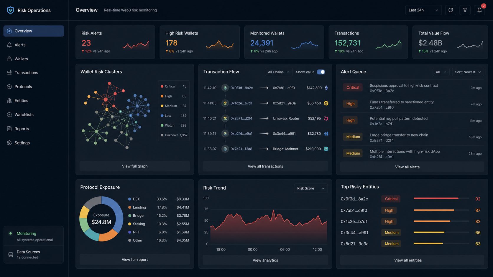
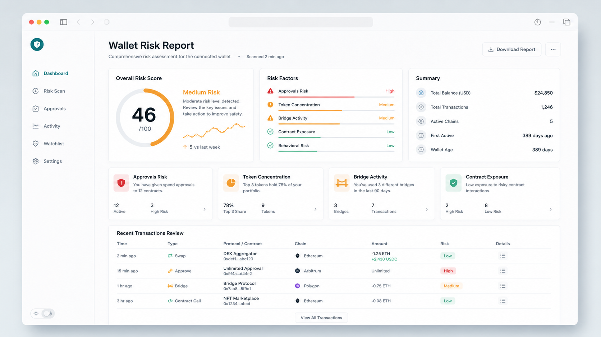
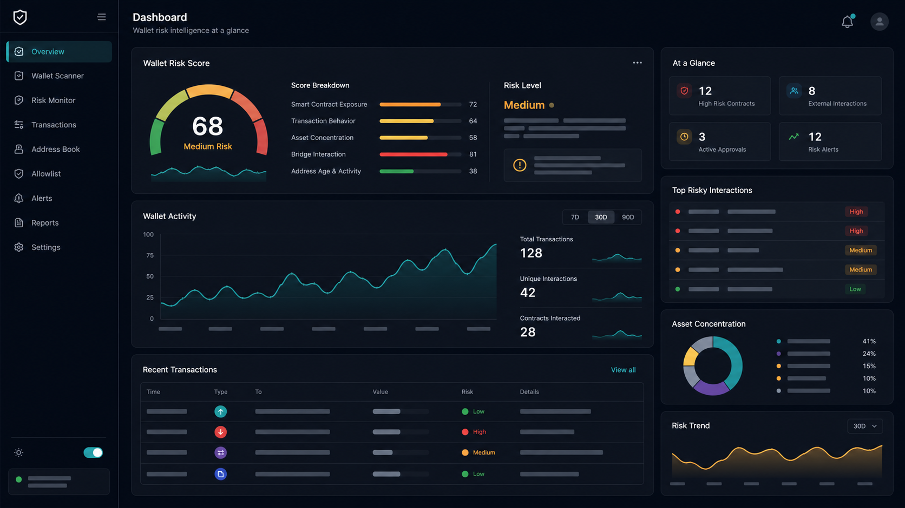
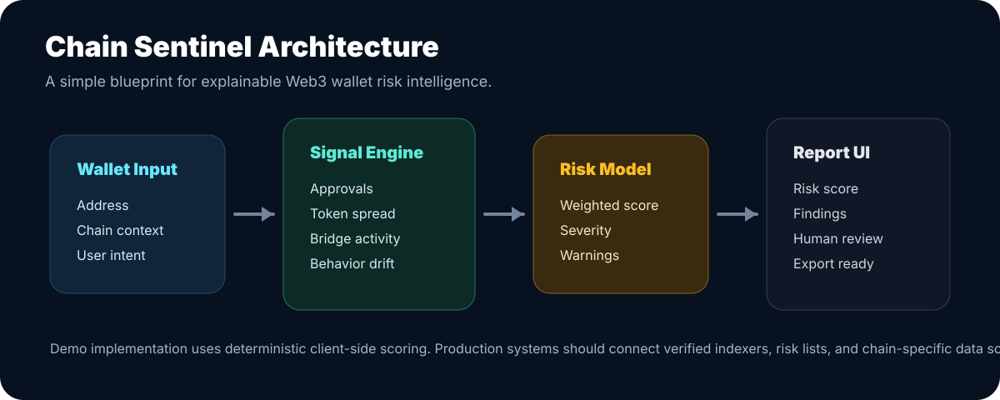

68
Review Required
Web3 Risk Intelligence
Wallet risk analysis for crypto-native teams.
Chain Sentinel turns a wallet address into an explainable risk profile: contract exposure, transfer behavior, token concentration, bridge activity, and operational warnings.
面向 Web3 团队的钱包风险分析工具，把地址行为转化为可读的风险评分和审查建议。

Scanner
Paste a wallet address and get a readable risk report.
输入钱包地址，生成风险评分、行为信号和人工审查建议。
Product Preview
A richer surface for reports, monitoring, and operations.
展示面覆盖风险报告、链上监控和运营工作台，方便作为 GitHub 项目页和产品原型展示。



Signal Model
Signals designed for human review, not blind automation.
信号用于辅助判断，不替代人工审查和安全决策。
Contract Exposure
Flags wallets that interact heavily with contracts, approvals, and unfamiliar execution surfaces.
Asset Concentration
Highlights wallets whose portfolio risk depends on a narrow set of volatile assets.
Bridge Activity
Identifies cross-chain behavior that may increase operational complexity and monitoring needs.
Behavior Drift
Scores sudden changes in activity patterns that deserve investigation before action.
Architecture
A lightweight blueprint for Web3 risk products.
A practical structure for turning wallet activity into explainable risk output.
从钱包输入到链上信号、风险引擎和可解释报告的轻量产品架构。
Wallet Input
On-chain Signals
Risk Engine
Explainable Report